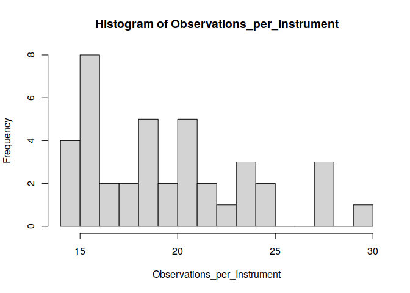

civ is an implementation of the categorical instrumental variable estimator proposed by Wiemann (2023; arxiv:123). civ allows for optimal instrumental variable estimation in settings with relatively few observations per category as seen in many economic applications including judge IV designs. To obtain valid inference in these challenging empirical settings, civ leverages a regularization assumption that implies existence of a latent categorical variable with fixed finite support achieving the same first stage fit as the observed instrument.
See the corresponding working paper Optimal Categorical Instrumental Variables for further discussion and theoretical details.
Installation
Install the latest development version from GitHub (requires devtools package):
if (!require("devtools")) {
install.packages("devtools")
}
devtools::install_github("thomaswiemann/civ", dependencies = TRUE)Example from the Simulation of Wiemann (2023)
To illustrate civ on a simple example, consider the data generating process from the simulation of Wiemann (2023): For i = 1, …, n, the data generating process is given by Yi = Diπ0(Xi) + Xiβ0 + Ui and Di = m0(Zi) + Xiγ0 + Vi, where (Ui,Vi) are mean-zero multivariate normal with σU2 = 1, σV2 = 0.9, and σUV = 0.6. Di is a scalar-valued endogenous variable, Xi ∼ Bernoulli(0.5) is a binary covariate and β0 = γ0 = 0, and Zi is the categorical instrument taking values in {1, …, 40} with equal probability. To introduce correlation between Zi and Xi, I further set Pr (Zi is odd|Xi=0) = Pr (Zi is even|Xi=1) = 0. The optimal instrument m0 is constructed by first partitioning the support of Zi into two equal subsets and then assigning either 0 or C as values. The scalar C is chosen such that the variance of the first stage variable is fixed to 1 and the concentration parameter for n = 800 is μ2 = 180. The data generating process allows for individual treatment effects π0(Xi) to differ with covariates. Here, π0(Xi) = 1 + 0.5(1−2Xi) so that the expected treatment effect is simply Eπ0(X) = 1.
The code snippet below draws n = 800 observations from this data generating process.
# Set seed
set.seed(51944)
# Sample parameters
nobs = 800 # sample size
C = 0.858 # first stage coefficient
sgm_V = 0.9 # first stage error
tau_X <- c(-0.5, 0.5) + 1 # second stage effects
# Sample controls and instrument
X <- sample(1:2, nobs, replace = T)
Z <- model.matrix(~ 0 + as.factor(sample(1:20, nobs, replace = T)):as.factor(X))
Z <- Z %*% c(1:ncol(Z))
# Create the low-dimensional latent instrument
Z0 <- Z %% 2 # underlying latent instrument
# Draw first and second stage errors
U_V <- matrix(rnorm(2 * nobs, 0, 1), nobs, 2) %*%
chol(matrix(c(1, 0.6, 0.6, sgm_V), 2, 2))
# Draw treatment and outcome variables
D <- Z0 * C + U_V[, 2]
y <- D * tau_X[X] + U_V[, 1]In the generated sample, the observed instrument takes 40 values with varying numbers of observations per instrument:

Using only the observed instrument Z, the goal is to estimate the in-sample average treatment effect:
mean(tau_X[X])
#> [1] 1.0325Estimate CIV
We load the civ package and estimate the categorical instrumental variable estimator where the first stage is restricted to K=2 support points. We also load the AER package to compute heteroskedasticity robust standard errors. See also ?civ and ?summary.civ for details.
# Load dependencies
library(civ)
library(AER)
#> Loading required package: car
#> Loading required package: carData
#> Loading required package: lmtest
#> Loading required package: zoo
#>
#> Attaching package: 'zoo'
#> The following objects are masked from 'package:base':
#>
#> as.Date, as.Date.numeric
#> Loading required package: sandwich
#> Loading required package: survival
# Compute CIV with K=2 and conduct inference
civ_fit <- civ(y = y, D = D, Z = Z, X = as.factor(X), K = 2)
civ_res <- summary(civ_fit, vcov = vcovHC(civ_fit$iv_fit, type = "HC1"))The CIV estimate and the corresponding standard error are shown below. The associated 95% confidence interval covers the true effect as indicated by the t-value of less than 1.96.
Why does CIV do well?
The key idea of CIV is to leverage a latent categorical variable Z0 with fewer categories that achieves the same population-level fit in the first stage as the observed instrument Z. Under the assumption that the support of the latent categorical variable is fixed with finite cardinality, it is possible to estimate a mapping from the observed categories to the latent categories. This estimated mapping can then be used to simplify the optimal instrumental variable estimator to a finite dimensional regression problem. Asymptotic properties of the CIV estimator then follow if the first-stage mapping can be estimated at a sufficient rate.
Wiemann (2023) provides sufficient conditions for estimation of the mapping at exponential rate using a K-Conditional-Means (KCMeans) estimator. The proposed KCMeans estimator is exact and computes very quickly with time polynomial in the number of observed categories, thus avoiding heuristic solution approaches otherwise associated with KMeans-type problems. See also the kcmeans R package for additional details.
In the considered data generating process, the underlying optimal instrument Z0 has two support points. In the first step, CIV attempts to map values of the observed instrument to these support points. The below code snippet shows that is largely succeeds in doing so: Among the 800 observations, only 16 observations are missclassified.
# Compute the clustering of instrument values
Z0_hat <- predict(civ_fit$kcmeans_fit, Z, clusters=T) - 1
# Compare clusters with the true underlying instrument Z0
missclassified <- ((Z0 - Z0_hat) != 0)
sum(missclassified)
#> [1] 16Thanks to classifying values of the instrument in the first step, the IV estimation problem substantially simplifies: Instead of using a categorical instrument with 40 values, CIV is equivalent to using the constructed binary instrument:
# Equivalent CIV using the constructed binary instrument
civ_fit_2 <- ivreg(y ~ D + as.factor(X) | as.factor(Z0_hat) + as.factor(X))
civ_res_2 <- summary(civ_fit_2, vcov = vcovHC(civ_fit_2, type = "HC1"))$coef
# Equivalent CIV results:
c(Estimate = civ_res_2[2, 1], "Std. Error" = civ_res_2[2, 2],
"t-val." = abs(civ_res_2[2, 1]-mean(tau_X[X]))/civ_res_2[2, 2])
#> Estimate Std. Error t-val.
#> 1.0063143 0.1086868 0.2409285Since correct classification requires very few observations per instrument, CIV is nearly identical to the infeasible orcle estimator that presumes knowledge of the low-dimensional optimal instrument Z0:
# Compute the infeasible oracle estimator
oracle_fit <- ivreg(y ~ D + as.factor(X) | as.factor(Z0) + as.factor(X))
oracle_res <- summary(oracle_fit, vcov = vcovHC(oracle_fit, type = "HC1"))
# Infeasible oracle results:
c(Estimate = oracle_res$coef[2, 1], "Std. Error" = oracle_res$coef[2, 2],
"t-val." = abs(oracle_res$coef[2, 1]-mean(tau_X[X]))/oracle_res$coef[2, 2])
#> Estimate Std. Error t-val.
#> 1.0184144 0.1065979 0.1321376Comparison of CIV to Alternative Optimal Instrument Estimators
To provide some evidence for the practical benefits of CIV over alternative estimators, consider estimating three commonly considered alternatives: two-stage least squares (TSLS), the post-Lasso IV estimator of Belloni et al. (2012), and an IV estimator that uses random forests in the first stage.
Key takeaways from the results: TSLS, post-Lasso IV, and random forest-based IV are heavily biased.
For extensive finite-sample comparisons, see Wiemann (2023; arxiv:123).
TSLS
The TSLS estimate is substantially more biased than the CIV estimate.
# Estimate two-stage least squares
tsls_fit <- ivreg(y ~ D + as.factor(X) | as.factor(Z) + as.factor(X))
tsls_res <- summary(tsls_fit, vcov = vcovHC(tsls_fit, type = "HC1"))$coef
# TSLS results:
c(Estimate = tsls_res[2, 1], "Std. Error" = tsls_res[2, 2],
"t-val." = abs(tsls_res[2, 1]-mean(tau_X[X]))/tsls_res[2, 2])
#> Estimate Std. Error t-val.
#> 1.11620022 0.08664093 0.96605856Post-Lasso IV
The post-Lasso IV estimator of Belloni et al. (2012) is heavily biased and the corresponding 95% confidence interval does not cover the in-sample treatment effect as indicated by the t-value of more than 1.96.
# Estimate post-Lasso IV with the plug-in penalty
library(hdm)
hdm_fit <- rlassoIV(y ~ D + as.factor(X) | as.factor(Z) + as.factor(X),
select.X = F)
hdm_res <- c(hdm_fit$coefficients, hdm_fit$se)
# post-Lasso IV results:
c(Estimate = hdm_res[1], "Std. Error" = hdm_res[2],
"t-val." = abs(hdm_res[1]-mean(tau_X[X]))/hdm_res[2])
#> Estimate.D Std. Error.D t-val..D
#> 0.7717395 0.1059556 2.4610350Random Forest IV
The random forest-based IV estimator is heavily biased and the corresponding 95% confidence interval does not cover the in-sample treatment effect as indicated by the t-value of more than 1.96.
library(ranger)
df <- data.frame(D = D, Z = as.factor(Z), X = as.factor(X))
mhat <- predict(ranger(D ~ Z + X, data = df), df)$predictions
ranger_fit <- ivreg(y ~ D + as.factor(X) | mhat + as.factor(X))
ranger_res <- summary(ranger_fit, vcov = vcovHC(ranger_fit, type = "HC1"))$coef
c(Estimate = ranger_res[2, 1], "Std. Error" = ranger_res[2, 2],
"t-val." = abs(ranger_res[2, 1]-mean(tau_X[X]))/ranger_res[2, 2])
#> Estimate Std. Error t-val.
#> 1.25887072 0.09053253 2.50043521